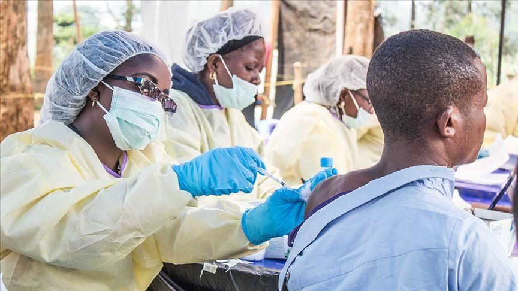
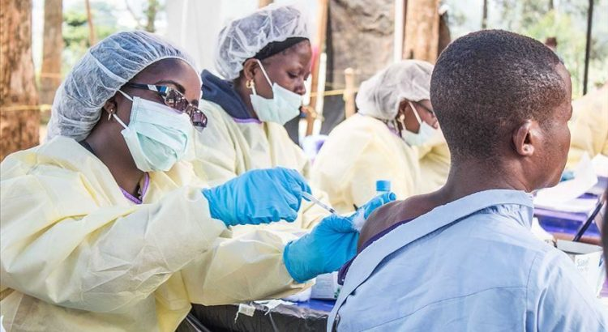
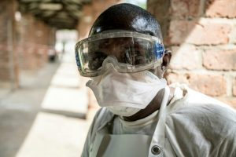

WHO Declares End of Ebola Outbreak in DR Congo

The World Health Organization (WHO) declared the end of the latest Ebola outbreak Wednesday in the northwest of the Democratic Republic of Congo (DRC).The outbreak, declared on June 1, infected 130 people and caused 55 deaths in the province of Équateur.It was the eleventh outbreak to hit the country.
As per a statement released Wednesday by the WHO regional office for Africa, 75 have recovered.The Congolese Minister of Health, Eteni Longondo, also joined the WHO in confirming the end of the epidemic in the African nation.
'I am happy to solemnly declare the end of the 11th epidemic of the Ebola virus,' the Health Minister told journalists.
The epidemic was said to have ended after 42 days since the last patient tested negative and no new positive cases have appeared since then, fulfilling the criteria for declaring the completion of that type of an outbreak.
'Overcoming one of the world’s most dangerous pathogens in remote and hard to access communities demonstrates what is possible when science and solidarity come together,' said WHO Africa chief Matshidiso Moeti.
'The technology used to keep the Ebola vaccine at super-cold temperatures will be helpful when bringing a COVID-19 vaccine to Africa,' she added.
The province of Équateur suffered its ninth Ebola virus pandemic between May and July 2018.The outbreak resulted in 54 cases, with 33 deaths and 21 recoveries.On June 25, authorities in the DR Congo declared the end of the tenth epidemic, which devastated the country’s three northeastern provinces (Kivu North, Kivu, and South Ituri) from August 1 2018.
That outbreak resulted in 3,463 cases, 2,280 deaths, and 1,171 survivors, according to the latest data released by WHO.This epidemic was the worst in the history of DR Congo, and the second most serious in the world, after the one that devastated West Africa from 2014 to 2016.
There, 11,300 people died and more than 28,500 cases were reported.However, these figures– according to WHO– may be more.
According to a statement released by the humanitarian organization, Doctors Without Borders (MSF), the eleventh epidemic was very different from the previous one in that it progressed at low intensity, generated small outbreaks in isolated areas, and was characterized, above all, by having a lower mortality rate.
Guyguy Manangama, responsible for MSF in responding to the Ebola epidemic in Équateur province, explained that this lower lethality may be due to the existence of some type of natural immunity among people in the province, as this region has previously experienced outbreaks of Ebola.
Ebola, discovered in the Democratic Republic of Congo in 1976– then called Zaire– is transmitted by direct contact with the blood and body fluids of infected people or animals.Fever causes heavy bleeding and can reach a death rate of 90%.Its first symptoms are sudden high fever, severe weakness and muscle pain, head and throat, as well as vomiting.
Share on Facebook Tweet Follow us
Posted On: 2020-11-19T00:00:00
Posted By: Vincent Ferdinand





Content Date: 2020-11-19
Download Date: 2021-07-09
Document ID: L0C04DPF1